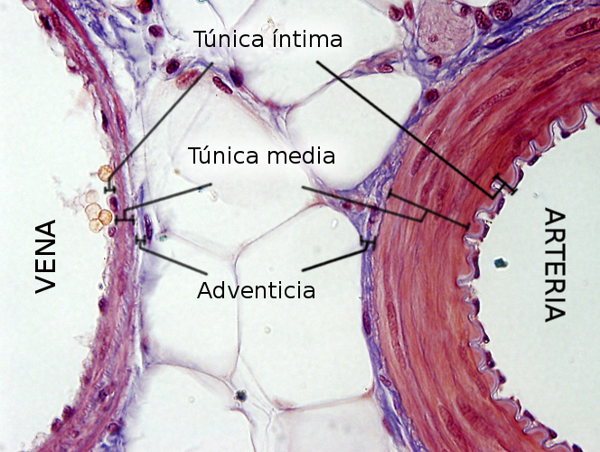
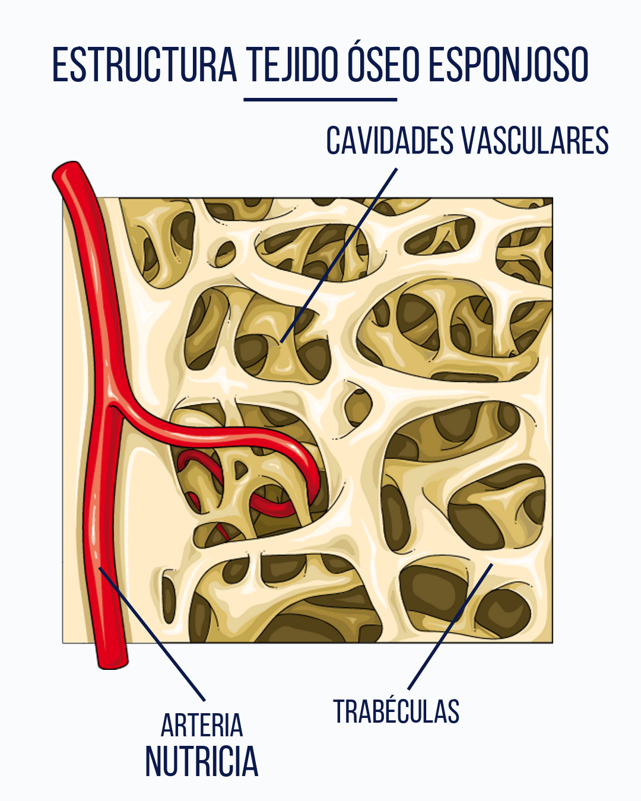
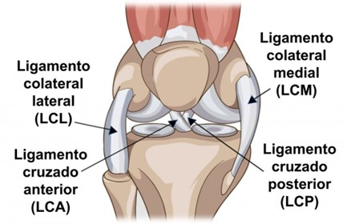

Aparato Circulatorio 🧬
Características histológicas de la pared de los vasos sanguíneos
Los vasos sanguíneos están formados por tres capas concéntricas:
- Túnica íntima: epitelio plano simple (endotelio) + lámina basal + subendotelio de tejido conectivo.
- Túnica media: músculo liso y fibras elásticas. Más gruesa en arterias.
- Túnica adventicia: tejido conectivo, vasos vasorum y nervios. Más prominente en venas.
| Tipo de vaso | Rasgo clave |
|---|---|
| Arteria elástica | Túnica media rica en láminas elásticas |
| Arteria muscular | Túnica media con predominio de músculo liso |
| Venas | Túnica adventicia más gruesa que la media |
| Capilares | Solo endotelio + lámina basal (una capa) |
Características histológicas del corazón

- Endocardio: epitelio plano simple + conectivo subendotelial.
- Miocardio: músculo estriado cardíaco con discos intercalares.
- Epicardio: conectivo laxo + epitelio (mesotelio).
Otros: sistema de conducción, vasos coronarios y válvulas con conectivo denso.
Características Histológicas de los Vasos Linfáticos
- Endotelio plano simple con uniones laxas.
- Lámina basal discontinua o ausente.
- Sin glóbulos rojos en condiciones normales.
- Válvulas internas que aseguran flujo unidireccional.
- Pared delgada, menos músculo liso que las venas.
- Clasificación: capilares linfáticos, colectores y conductos linfáticos.
Importancia clínica: edema, metástasis e infecciones por vía linfática.
Aparato de Sostén 🧬

Componentes del tejido cartilaginoso
- Condrocitos en lagunas.
- Matriz rica en colágeno tipo II y agua.
- Pericondrio en cartílagos no articulares.
Crecimiento del cartílago
- Intersticial: división interna de condrocitos.
- Aposicional: desde el pericondrio hacia afuera.
Tipos de cartílago

| Tipo | Características | Ubicación |
|---|---|---|
| Hialino | Matriz homogénea, colágeno II | Articulaciones, nariz, tráquea |
| Elástico | Fibras elásticas + colágeno | Oreja, epiglotis |
| Fibroso | Mucho colágeno I, resistente | Discos intervertebrales, meniscos |
Tejido óseo
Conectivo mineralizado que forma el esqueleto. Tiene osteoblastos, osteocitos, osteoclastos y matriz con colágeno I + hidroxiapatita. Presenta osteonas, canalículos, periostio.
Tipos: compacto (con osteonas) y esponjoso (trabéculas con médula).
Ligamentos
Conectivo denso regular que une huesos:
- Fibras colágenas tipo I paralelas.
- Pocos vasos, difícil reparación.
- Fibroblastos responsables de mantenimiento.
- Estabiliza articulaciones y limita movimientos.